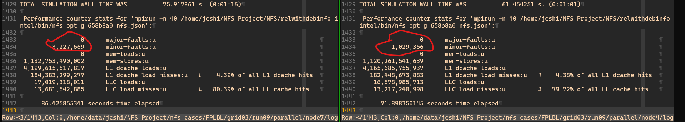
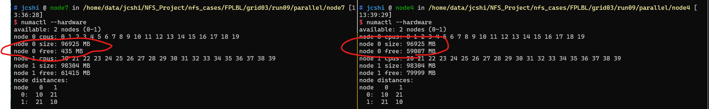
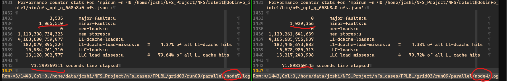

来源
群里 H 老师报告 node7 上跑某著名 CFD 商业软件比其它节点慢一倍以上，问我有没有类似经历。
测试
我来测试一下我的 NFR 程序。结果发现确实 node7 上比其它节点慢，如下图

node7 上 NFR 跑完需要 76 秒， node4 上跑完需要 61.5 秒。 所以 node7 慢的表现是某著名 CFD 商业软件慢一倍以上，我的 NFR 慢 24%。
但是单核跑 NFR 在 node7 和 node4 上没有性能差异。
解决
Linux 上性能分析参考 Brendan D. Gregg 大神的网站。 了解到使用 perf 给出性能统计报告，也就是上面的图。perf 使用参考 Brendan D. Gregg 大神的网页。 perf 可以直接统计 MPI 并行程序的性能。
首先使用perf stat -d mpirun -n 40 prog input.file发现 node7 上 NFR 的 page-faults 是 node4 上的 3 倍。
先了解 page-faults 是什么。 参考page fault带来的性能问题。 几个要点
- Linux下，进程并不是直接访问物理内存，而是通过内存管理单元(MMU)来访问内存资源。
- 虚拟的内存地址和物理的内存地址之间保持一种映射关系，这种关系由 MMU 进行管理。
- 需要访问的内存不在虚拟地址空间，也不在物理内存中，需要从慢速设备载入，称为 major page fault
- 需要访问的内存不在虚拟地址空间，但是在物理内存中，只需要MMU建立物理内存和虚拟地址空间的映射关系即可，minor page fault
- 进程需要访问的内存地址不在它的虚拟地址空间范围内，属于越界访问，内核会报segment fault错误

所以进一步来看下到底是 major 还是 minor 类型。
指定 perf 的具体分析类型：perf stat -d -e major-faults,minor-faults,mem-loads,mem-stores mpirun -n 40 prog input.file，
得到最上面对比图中 minor-faults 在 node7 上是 node4 的 3 倍。
所以 node7 上串行运行 NFR 没有性能差异，并行 40 核运行出现 3 倍的 minor-faults。
这个可能与现代 CPU-Memory 架构有关，即 NUMA 架构。
参考NUMA架构的CPU – 你真的用好了么？。要点如下
- 之前所有CPU Core都是通过共享一个北桥来读取内存，随着核数如何的发展，北桥在响应时间上的性能瓶颈越来越明显
- NUMA 中，虽然内存直接与 CPU 紧邻，但是由于内存被平均分配在了各个裸晶 (die) 1上。只有当 CPU 访问自身直接相连的内存对应的物理地址时，才会有较短的响应时间（后称 Local access ）。而如果需要访问其他 CPU 紧密相连的内存数据时，就需要通过 inter-connect 通道访问，响应时间就相比之前变慢了（后称 Remote access ）。所以 NUMA（Non-Uniform Memory Access）就此得名。
- Linux 识别到 NUMA 架构后，默认的内存分配方案就是：优先尝试在请求线程当前所处的 CPU 的本地内存上分配空间。如果本地内存不足，优先淘汰本地内存中无用的 page（Inactive，Unmapped）
- 此文主要讨论 NUMA 中 CPU 对远端内存访问慢的特点导致 MySQL 性能变差。

从此文中得到启发，进一步检查 node7 上 NUMA 状态。node7 上居然没有numa_miss，如下
$ numastat
node0 node1
numa_hit 697457403 665306702
numa_miss 2 378900577
numa_foreign 378900577 2
interleave_hit 315713 420961
local_node 697270591 666054700
other_node 186814 378152579
而 node4 上就有 numa_miss
$ numastat
node0 node1
numa_hit 36121273007 7797037099
numa_miss 7027051 1552203057
numa_foreign 1552203057 7027051
interleave_hit 266562 281401
local_node 36120608738 7797778236
other_node 7691320 1551461920
进一步检查 NUMA 设定： numactl --hardware

可以看到 node7 上 NUMA 的 free 很少，只有 435MB，正常的 node4 有 60GB。
可以推测是 node7 上极少的 free NUMA 导致了 3 倍的 minor page faults。
NUMA free 少应该是被缓存占了，相关术语是 page cache。
所以应该清理 page cache。
上面文章中给出的一个解决 NUMA 问题的方案是
echo 3 > /proc/sys/vm/drop_caches
在 node7 上使用 root 执行上述命令后，node7 性能恢复正常。

如果想令系统自动清理缓存，参考Linux下清理内存和Cache方法 /proc/sys/vm/drop_caches，不过我并没有测试。 留待以后尝试。
-
A die, in the context of integrated circuits, is a small block of semiconducting material on which a given functional circuit is fabricated. ↩︎